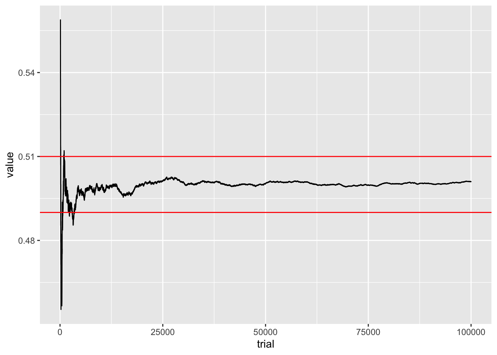
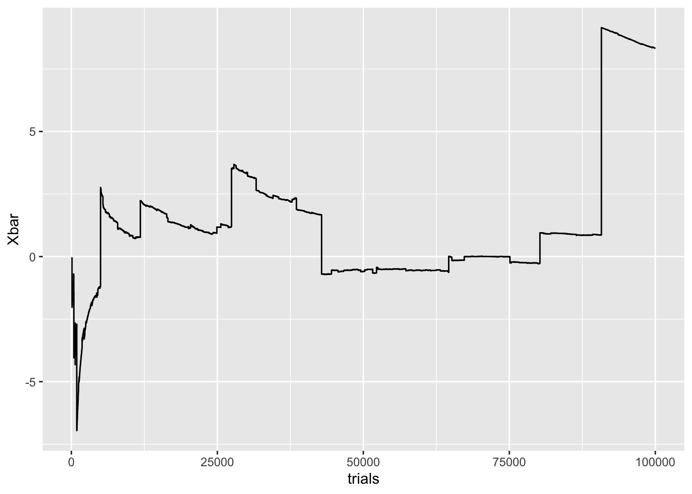
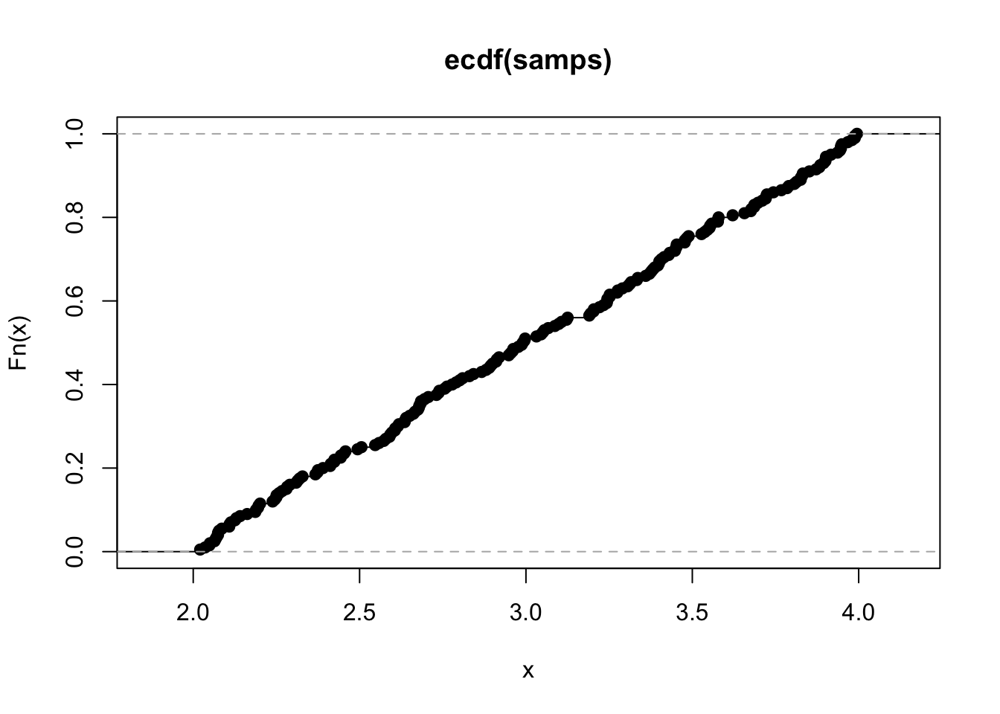
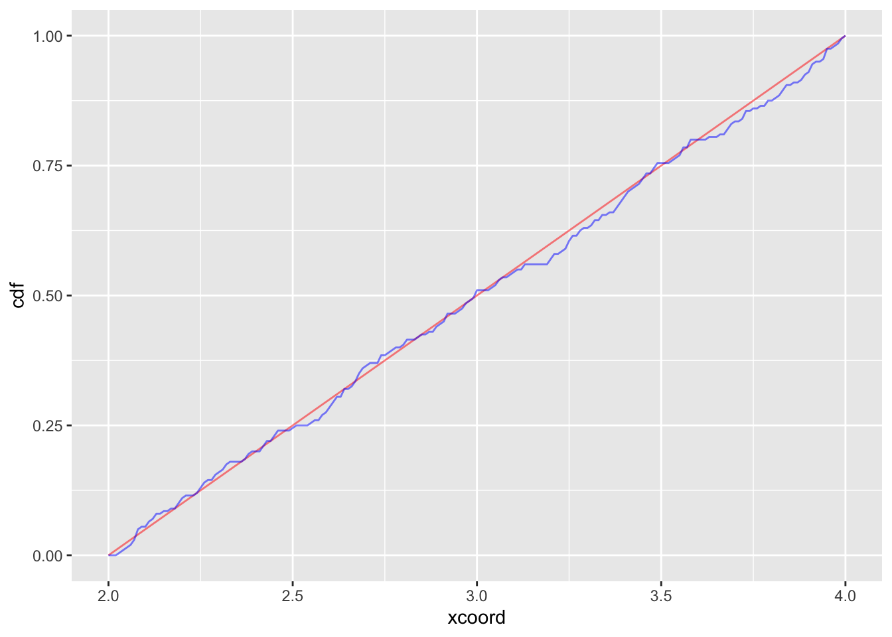
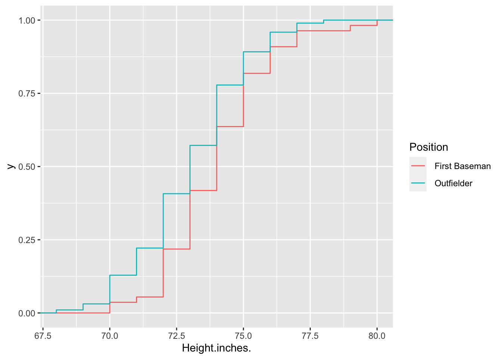
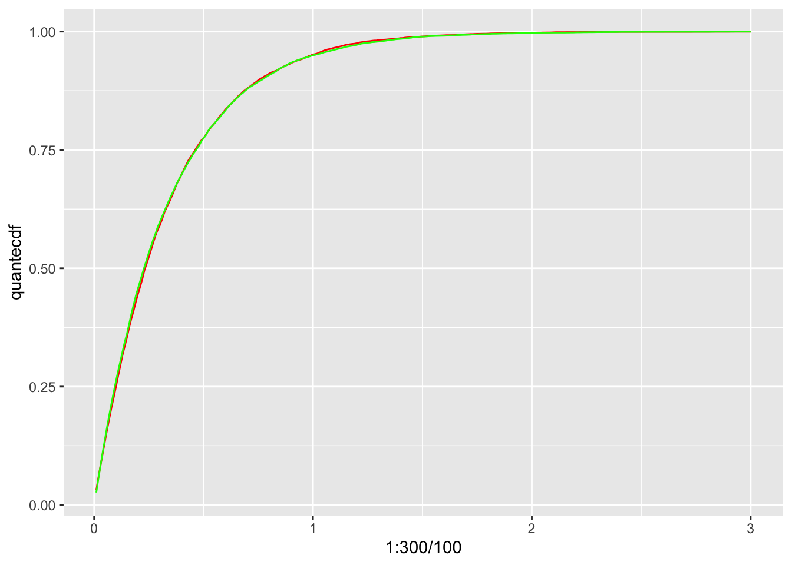

Mean, variance, and the two major theorems in probability
For some random variable \(X\), it’s desirable to be able to describe its main features. For instance, what does a typical sample look like? Also, if we sample a bunch of times, should I expect samples to be very close to eachother, or do samples vary drastically? The two main quantities to answers these questions are the mean and variance. While the mean and variance are quantities related to a random quantity \(X\), they are both deterministic , meaning that they are not random. In most cases, one could think of these quantities as the two most informative numbers describing a random variable.
Q: Note the qualifier ``in most cases” in the last sentence. Can you think of a case where there is a more important quantity related to a random variable? For instance, think of a case where a maximum value of \(X\) would be important.
Not only are the mean and variance of great practical value, but they are also at the center of two major theorems in probability: the law of large number and central limit theorem. These two theorems tell us how sums of many random variables act like, and play a vital role in statistics.
1 The mean
For a continuous random variable \(X\) with pdf \(f_X\), the expected value (or mean) is given by
\[\begin{equation} \mathbb E[X]= \int_{-\infty}^\infty f_X(s)\cdot sds \end{equation}\]
Q: Notice the factor of \(s\) next to \(f_X\). What would the integral equal if that factor wasn’t there?
For the discrete case, if \(p_x = \mathbb P(X = x)\), then \[\begin{equation} \mathbb E[X] = \sum_{x \in S(X)} xp_x, \end{equation}\] where \(S(X)\) is the state space of \(X\).
We won’t be computing many theoretical means in this class (you’ll be doing plenty of that in a probability class), but it’s a good idea to go through two basic cases:
(Expected value of Bernoulli) For the Bernoulli random variable \(B_p\), the state space is \(S = \{0,1\}\), so then the expected value is
\[\begin{equation} \mathbb E[B_p] = \sum_{x \in S(X)} xp_x = \sum_{0}^1 xp_x = 0\cdot p_0+1\cdot p_1 = 0(1-p)+1(p) = p \end{equation}\]
(Expected value of Uniform) For the uniform random variable \(U(a,b)\), the state space is \(S = [a,b]\) and the pdf if \[\begin{equation} p_U(x) = 1/(b-a) \quad x \in [a,b] \end{equation}\] , so then the expected value is then
\[\begin{equation} \mathbb E [U(a,b)] = \int_{a}^b xp_U(x)dx = \int_{a}^b x/(b-a)dx = \frac{1}{b-a}\int_a^b xdx = \frac{1}{b-a}\cdot \frac{b^2-a^2}{2} = \frac{a+b}{2} \end{equation}\]
Q: Sanity check: without computing anything, why does this answer make sense?
Here’s a sampling-based interpretation of \(\mathbb E[X]\): if I generate many, many instances of my random variable \(X_1, X_2, \dots, X_N\) for some very large \(N\), then for most random variables, \[\begin{equation} \mathbb E[X] \approx (X_1+X_2+\dots+X_N)/N. \end{equation}\]
In other words, a sample average of \(N\) samples of my random variable should approximately give the expected value. So \(\mathbb E[X]\) is an average value of \(X\).
Given a fair coin, how many tails should we expect to flip before we obtain our first heads? The answer is simply \(\mathbb E[G_{.5}]\). By our definition, since \(S = \{0,1,2,\dots,\}\),
\[\begin{equation} \mathbb E[G_{.5}] = \sum_{0}^\infty p_x \cdot x = \sum_{0}^\infty (1-p)^x\cdot p \cdot x \end{equation}\]
This takes some effort to compute (it involves knowledge of geometric series and the binomial theorem). But we can numerically compute the mean just by taking many samples and finding the sample mean:
numsamps = 10000
p = .5
samps = rgeom(numsamps, p)
mean(samps)## [1] 1.0068We can guess that, on average, we will flip one tail before obtaining our first head. If we need more confidence about that statement, we can always ramp up the number of samples. The greatest confidence, of course, is to compute exactly the expected value. The explicit expression is \[\begin{equation} \mathbb E[G_p] = \frac{1-p}p \end{equation}\] which means \(\mathbb E[G_{.5}] = \frac{1-.5}{.5} = 1\).
Q: Another sanity check: without computing anything, as \(p\) increases, should the expected value increase or decrease?
Let’s verify that the mean of a standard normal \(Z_{0,1}\) is 0. The expected value is given by
\[\begin{equation} \mathbb E[Z(0,1)] = \int_{-\infty}^\infty x\frac{1}{\sqrt{2\pi}}e^{-x^2/2} \end{equation}\]
Q: This integral looks pretty awful, but there are at least two quick ways to show that the integral is zero. What are they?
Even without knowing how to compute the integral, we can still show that it’s at least very close to zero via sampling:
numsamps = 10000
samps = rnorm(numsamps, 0,1)
mean(samps)## [1] 0.0027102682 The standard deviation
On average, how far away is a sample \(X\) away from its mean? This is what the variance measures. Formally
\[\begin{equation} \mathrm{Var}(X) = \mathbb{E}[(X-\mathbb{E}[X])^2] \end{equation}\]
Formulas abound…we won’t get into them (if you take probability, on the other hand…). The main observation is that \(\mathrm{Var}(X)\) is an expected value of the squared distance from the mean value to a sample of \(X\).
Q: Think of an extremely boring case of where \(X = 17\). No randomness at all. Every time you sample, you get 17. From the definitions above, compute \(\mathbb E[X]\) and \(\mathrm{Var}(X)\) and the explain why your answers are reasonable.
The standard deviation is simply given by \[\begin{equation} \sigma_{X} = \sqrt{\mathrm{Var}(X)} \end{equation}\]
The upshot for using the standard deviation is that \(\sigma_X\) has the same units as \(X\) (if \(X\) is measured in inches, then so is \(\sigma_X\).)
We will be using the sd function to compute the sample standard deviation of a finite collection of samples. The formula is quite ugly, but it’s easy to find the definition in a textbook or online. Again, we’re avoiding the weeds here (for the millionth time, take probability and statistics!)
Let’s compute some sample standard deviations:
- Standard Normal
numsamps = 10000
samps = rnorm(numsamps, 0,1)
sd(samps)## [1] 1.001845- Geometric
numsamps = 10000
p = .5
samps = rgeom(numsamps, p)
sd(samps)## [1] 1.401472- Uniform
numsamps = 10000
a = 4
b = 6
samps = runif(numsamps, a,b)
sd(samps)## [1] 0.5806143Q: What happens to the standard deviation of \(Z_{0,b}\) as \(b\rightarrow \infty\)? What about \(Z_{a,1}\) as \(a\rightarrow \infty\)? What about \(G_p\) as \(p\rightarrow 0\)? \(p \rightarrow 1\)?
3 Big Theorem 1: the law of large numbers
The law of large numbers is a very formal way of saying “It all comes out in the wash.” Sampling a random variable many times will typically generate a few odd looking individual samples. But with mathematical certainty, there is a 100% probability that if we keep sampling, then we are guaranteed that sample means will converge to the expected value (if there is an expected value).
3.1 Law of large numbers with coin flips
Let \(N>0\) be a large integer, and \(B_{.5}^1, B_{.5}^2, \dots, B_{.5}^{N}\) a collection of \(N\) Bernoulli random variables with \(p = 1/2.\) We also need to assume these random variables are independent, meaning that the result of one doesn’t affect the result of another (…there’s a rigorous definition of this). So, if there’s a 50% chance that each \(B_{.5}^i\) is equal to 1, and there’s a 50% chance that it’s equal to 0, then we should expect that
\[\begin{equation} \sum_{i = 1}^N B_{.5}^i/N = (B_{.5}^1+\dots, B_{.5}^N)/N \approx \mathbb E[B_{.5}] = 1/2 \end{equation}\] if \(N\) is large.
In general, we will be dealing with iid sample \(X_1, \dots, X_N\) (iid stands __i__ndenpendent and __i__dentically __d__istributed, meaning each sample is being generated from the same distribution). Here are two versions of the law of large numbers:
(Weak LLN)\[ \lim_{n\rightarrow \infty} \mathbb P(|\bar X_n - \mu_X|>\varepsilon) = 0.\]
(Strong LLN) \[\mathbb P( \lim_{n\rightarrow \infty} \bar X_n = \mu_X) = 1\]
Notice the location of the limit in each of these expressions. Weak LLN states that sample paths of \(\bar X_n\) will increasingly land in an \(\varepsilon\)-tube around \(\mu_X\), while strong LLN says that with probability one a sample path with enter the \(\varepsilon\)-tube and never leave for all eternity! Given that we’re dealing with random quantities, this is quite the strong statement!
4 Tracking LLN
#Creating an epsilon jail for coin flips
eps = .01
samps = rbinom(100000, 1, .5)
Xbar = cumsum(samps)/1:length(samps)
Xbar = data.frame(Xbar[100:100000])
Xbar$trial = 100:100000
colnames(Xbar) = c('value', 'trial')
Xbar %>% ggplot() + geom_line(aes(trial,value)) +
geom_hline(yintercept = .5 +eps, color = 'red') +
geom_hline(yintercept = .5 -eps, color = 'red') > Q: Is this plot demonstrating the weak or strong law of large numbers? What would a plot for the other case look like?
Generate 10000 samples of \(B_{.5}\).
Plot a bar graph for the proportion of each sample.
Write a function that returns \(S_N\) for \(N \ge 1\)
Plot a line graph the on the x-axis is \(N\) and the y-axis is \(S_N\). Report on what you find.
5 The Cauchy distribution: ruining it for everybody
For this exercise, we simulate the royal pain in the neck known as the Cauchy random variable \(C\). It has a PDF of
\[\begin{equation} f(x) = \frac{1}{\pi} \frac{1}{1+x^2} \end{equation}\]
You can generate a Cauchy random variable by dividing two independent \(Z_{0,1}\) normal random variables. In probability speak,
\[\begin{equation} C \sim Z^1_{0,1}/Z^2_{0,1} \end{equation}\]
The Cauchy \(C\) random variable is a problem child. It’s a continuous random variable defined on whole line with a pdf of \[\begin{equation} f(x) = \frac{1}{\pi} \frac{1}{1+x^2} \end{equation}\]
Q: What is the integral corresponding to the expected value? Show that the integral doesn’t exist!
If \(\mathbb E[C]\) doesn’t exist, then the law of large numbers doesn’t apply. This means that we’re lost, in general, with regards to what happens to sample means. In terms of the \(\epsilon\)-prison, the Cauchy distribution is able to make a jail break:
Despite being so unruly, it’s not hard to generate Cauchy random variables. One way is to simply divide two standard normals \(Z_1, Z_2\). In probability speak, \[\begin{equation} C \sim Z^1_{0,1}/Z^2_{0,1} \end{equation}\]
Let’s repeat the same experiment that we just did with the normal.
runs = 100000
eps = .01
samps = rnorm(runs, 0, 1)/rnorm(runs, 0, 1)
trials = 100:runs
Xbar = cumsum(samps)/1:length(samps)
Xbar = Xbar[100:runs]
C = data.frame(trials, Xbar)
C %>% ggplot() + geom_line(aes(trials, Xbar))
You can see here the result of fat tails. A pdf for a Gaussian collapses to zero incredibly quickly, at a rate of \(e^{-x^2}\). Cauchy pdfs, on the other hand, really take their time, decaying at a rate of \(1/x^2\). Since the tails of a Cauchy are so fat, it isn’t insanely rare to draw a sample with an incredibly large magnitude. In the graph above, this corresponds to the big jumps. After each big jump, the sample mean tends to drift toward zero, but inevitably, a devastatingly large sample will be drawn, and ruin everything.
6 The central limit theorem
Perhaps the crown jewel of probability is the central limit theorem. This theorem shows that the normal distribution is, in a sense, universal. This theorem states that for (almost) every random variable, we can take average in the right way and obtain the distribution for \(Z_{0,1}\). That’s quite crazy, since our original distribution can be completely different from a normal. Its pdf can be arbitrarily weird looking. Heck, it could even be a discrete distribution!
So what’s the correct way to take averages? Note that if I take averages like in the last section, \[\begin{equation} \bar X_N = (X_1 +\dots + X_N)/N \rightarrow \mathbb E[X]. \end{equation}\] This is the law of large numbers. As wonderful as that theorem is, it’s not what we’re looking for. The expected value is a deterministic number, but we want to scale things so that the sum that converges to something random. The central limit theorem states for \(S_n = X_1 +\dots +X_n\), then the correct scaling is
\[\begin{equation} \frac{ S_n-n \mathbb E[X]}{\sqrt{n\mathrm{Var}(X)}} \rightarrow N(0,1) \end{equation}\]
in law (meaning the histograms of the left and right side ought to look the same for large \(n\)).
6.1 Generating samples and samples of samples
We’ll be assuming here that we can generate as much data as we need. The main theme in statistics is scarcity: in reality this is never the case.
Here’s a run through for creating a visual which shows the central limit theorem. There’s some subtlety here: we are looking at the random variable \[T = \frac{ S_n-n \mathbb E[X]}{\sqrt{n\mathrm{Var}(X)}}\]. To generate a single sample sample of this, we need to generate \(n\) iid samples \(X_1, X_2, \dots, X_n\). Thus, to get a histogram, we sample \(T_1, \dots, T_N\) for some other large number \(N\).
experiments = 10000
flips = 1000
p = .2
A = rep(0, experiments)
for (i in 1:experiments){
A[i] = sum(rbinom(flips, 1, p))
}
meanber = function(p){
return(p)
}
sdber = function(p){
return(sqrt(p*(1-p)))
}
stdize = function(x){
return ((x-meanber(p)*flips)/(sdber(p)*sqrt(flips)))
}
stdizeA = mapply(stdize, A)
#Let's ggplotize this
CLT = data.frame(Ber = stdizeA, Norm = rnorm(experiments, 0, 1))
CLT %>% ggplot()+ geom_density(aes(Ber), fill = "red", alpha = 0.5, bins = 120, color = 'red')+
geom_density(aes(Norm), fill = "blue", alpha = 0.5, bins = 120, color = 'blue')## Warning: Ignoring unknown parameters: bins
## Warning: Ignoring unknown parameters: bins
\[\begin{equation} (S_n - n \mathbb E[X_1])/(\sqrt {n}\sigma_X) \rightarrow Z_{0,1} \quad \hbox{as } n\rightarrow \infty. \end{equation}\]
To put the CLT in less formal terms:
- Take any random variable \(X\)
- Sample it many, many times, and take its sum. Call it \(S_n\)
- Chop off the mean of \(S_n\), and divide by the standard deviation of \(S_n\).
- The variable you’re left with should be pretty close to a \(Z_{0,1}\) random variable.
I mean, that’s nice and all, but what does this have to do with data science? Isn’t this a data science class? Well, the point is that if we want to make statements about sample means, then we might deal with things like confidence intervals that use the central limit theorem in a very important way. We’ll visit this shorty.
7 The CDF
One last type of object from probability that we’ll cover is the cumulative distribution function, or CDF. Both discrete and continuous random variables have CDFs. The CDF \(F_X(x)\) for a random variable \(X\) is defined by \[\begin{equation} F_X(x) = \mathbb P(X \le x). \end{equation}\]
Q: From this definition, for any \(X\), what should \(F_X(x)\) be as \(x \rightarrow -\infty\) and \(x \rightarrow \infty\)?
For a dataset with values \(X_1, X_2, \dots, X_N\), there is also the empirical cumulative distribution function (eCDF), given by \[\begin{equation} \hat F_N(x) = \#\{X_i \le x\}/N \end{equation}\]
In words, this is fraction of \(X_i\) which are at most \(x\).
7.1 The Glivenko Cantelli theorem
The Glivenko Cantelli theorem shows that the eCDF approaches the CDF as the number of samples becomes large:
\[\begin{equation} \sup_{x} |F(x)-\hat F_N(x)| \rightarrow 0, \quad \hbox{ as } N \rightarrow \infty \end{equation}\]
Some comments are in order for this equation. It’s okay to think of the expression \(\sup\) (read “supremum”) as a maximum. What are we taking a maximum of? Well, the biggest absolute difference between the two functions \(F(x)\) and \(\hat F(x)\). This quantity above is called the Kolmogorov-Smirnov distance between \(F\) and \(\hat F_N\).
What should the CDF of the Bernoulli random variable \(B_{.5}\) look like?
Let’s generate 10000 samples of a Uniform(2,4) random variable. Plot the empirical CDF with the function.
samps = runif(200, 2, 4)
ourbincdf = ecdf(samps)
plot(ourbincdf)
#Compare to cdf of Bernoulli (it's vectorized!)
graphs = data.frame(ecdf = ourbincdf(200:400/100), cdf = punif( 200:400/100, 2, 4), xcoord = 200:400/100)
#Let's just use the alpha argument
graphs %>% ggplot(aes(x = xcoord))+geom_line(aes(y = cdf), color = "red", alpha = .5)+ geom_line(aes(y = ecdf), color = "blue", alpha = .5)
This result holds in general: If I sample many times from some distribution, and take the empirical CDF, it should look very close to the theoretical CDF. This is the Glivenko Cantelli theorem.
Q: What the approximate KS distance between the cdf and ecdf here?
8 The cdf and quantiles in practice
eCDFs can be quite practical when using actual datasets. In this example We will be using the dataset baseball the dataset, which gives positions and physical characteristics of different baseball players.
Let’s ask the following question: What percentage of baseball players are at least 6 feet tall?
Here is the eCDF of heights for different baseball players, along with a vertical line denoting the 6 foot mark:
empcdfheight = ecdf(baseball$Height.inches)
baseball %>% ggplot(aes(Height.inches.))+ stat_ecdf()+
geom_vline(xintercept = 72, color = 'red')
Q: Is the percentage of baseball players over 6 feet more or less than 75%? Be careful! Use the definition of eCDF, or just invoke the fact that CDFs and eCDFs are cadlag (meaning continuous from the right, and having a limit from the left).
As you can see, having an eCDF enables the reader to answer the question “What percentage of players are over/under \(x\) inches tall?” for any value of \(x\).
You can in fact just use the ecdf function to answer this question.
empcdfheight = ecdf(baseball$Height.inches)
empcdfheight(72)## [1] 0.3104449Q: What percentage of players are under 75 inches tall? What percentage are at least 70 inches tall?
We can further check out individual ecdfs under different positions:
baseball %>% filter(Position %in% c(' First Baseman', ' Outfielder')) %>%
ggplot(aes(Height.inches., color = Position))+
stat_ecdf()
Q: The eCDF for Outfielders is heigher than the eCDF for First Basemen. What does this tell you about comparing heights between the two positions? In fancy probability speak, if the CDF of X is greater than the CDF of Y, we say that Y is stochastically dominant to X.
We can also switch inputs and outputs and ask the question “What value of \(x\) is in the \(p\)th percentile of the dataset”. This kind of question comes up all the time in standardized testing: “What score do I need to achieve to be at least as good as 90% of all test takers?”. The answer to this question is known as the quantile. It should be seen as the inverse function of the CDF (or eCDF), although there are a few technical issues when trying to take the inverse of a function which has piecewise constant parts. The quantile is given by the R function, quantile (surprise!). The first argument takes in the data and the second corresponds to the percentile.
quantile(baseball$Height.inches., .1)## 10%
## 71quantile(baseball$Height.inches., .9)## 90%
## 77empcdfheight(71)## [1] 0.1634429empcdfheight(77)## [1] 0.950677Q: Hold on! Shouldn’t these values be equal? What happened? Hint: try plugging in values of the empirical cdf at 70.9 and 76.9.
#A universal random variable generator
Besides their use in ranking, quantiles have an incredibly practical purpose. Given a random variable \(X\) and a CDF \(F_X(x)\), we can simulate \(X\) by using the quantile function \(F^{-1}(q)\) and a run of the mill \(U(0,1)\) random number generator. For R, this is simply given by the function runif(1).
How does it work? Well, the theorem is
This theorem states that I can just compose the quantile with a uniform random 1 variable to generate random samples of \(X\).
Proof of claim: (handwavy) We show that \(F_X^{-1}(U)\) and \(X\) have the same CDFs. Let \(F_Y\) be the CDF of \(F_X^{-1}(U)\)
\[F_Y(x) = \mathbb P(F_X^{-1}(U) \le x) = \mathbb P(U \le F_X(x) ) = F_X(x)\]
…and we’re done!
Let’s test this out.
- Derive the quantile for the exponential distribution \(X_\lambda\) where \(\lambda = 3\).
The cdf of an exponential RV is
\[F(x) = 1-e^{-\lambda x}.\]
The inverse of this function is
\[ F^{-1}(q) = -\log(1-q)/\lambda \]
Let’s code this up as
lambda = 3
quantexp = function(x){
return(- log(1-x)/lambda)
}- Simulate 10000 samples using the quantile method.
samps = 10000
U = runif(samps)
quantsamps = quantexp(U)- Simulate 10000 samples using the built in R function for exponential random variables.
easysamps = rexp(10000, rate = 3)- Plot the eCDFs of both methods.
quantecdf = ecdf(quantsamps)(1:300/100)
easyecdf = ecdf(easysamps)(1:300/100)
CDFs = data.frame(quantecdf, easyecdf)
CDFs %>% ggplot(aes(x = 1:300/100)) + geom_line(aes(y = quantecdf), color = 'red')+
geom_line(aes(y = easyecdf), color = 'green')
Not bad!